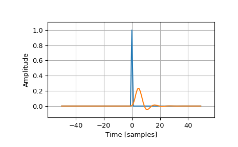

scipy.signal.unit_impulse¶
-
scipy.signal.unit_impulse(shape, idx=None, dtype=<class 'float'>)[source]¶ Unit impulse signal (discrete delta function) or unit basis vector.
- Parameters
- shapeint or tuple of int
Number of samples in the output (1-D), or a tuple that represents the shape of the output (N-D).
- idxNone or int or tuple of int or ‘mid’, optional
Index at which the value is 1. If None, defaults to the 0th element. If
idx='mid', the impulse will be centered atshape // 2in all dimensions. If an int, the impulse will be at idx in all dimensions.- dtypedata-type, optional
The desired data-type for the array, e.g.,
numpy.int8. Default isnumpy.float64.
- Returns
- yndarray
Output array containing an impulse signal.
Notes
The 1D case is also known as the Kronecker delta.
New in version 0.19.0.
Examples
An impulse at the 0th element (\(\delta[n]\)):
>>> from scipy import signal >>> signal.unit_impulse(8) array([ 1., 0., 0., 0., 0., 0., 0., 0.])
Impulse offset by 2 samples (\(\delta[n-2]\)):
>>> signal.unit_impulse(7, 2) array([ 0., 0., 1., 0., 0., 0., 0.])
2-dimensional impulse, centered:
>>> signal.unit_impulse((3, 3), 'mid') array([[ 0., 0., 0.], [ 0., 1., 0.], [ 0., 0., 0.]])
Impulse at (2, 2), using broadcasting:
>>> signal.unit_impulse((4, 4), 2) array([[ 0., 0., 0., 0.], [ 0., 0., 0., 0.], [ 0., 0., 1., 0.], [ 0., 0., 0., 0.]])
Plot the impulse response of a 4th-order Butterworth lowpass filter:
>>> imp = signal.unit_impulse(100, 'mid') >>> b, a = signal.butter(4, 0.2) >>> response = signal.lfilter(b, a, imp)
>>> import matplotlib.pyplot as plt >>> plt.plot(np.arange(-50, 50), imp) >>> plt.plot(np.arange(-50, 50), response) >>> plt.margins(0.1, 0.1) >>> plt.xlabel('Time [samples]') >>> plt.ylabel('Amplitude') >>> plt.grid(True) >>> plt.show()
